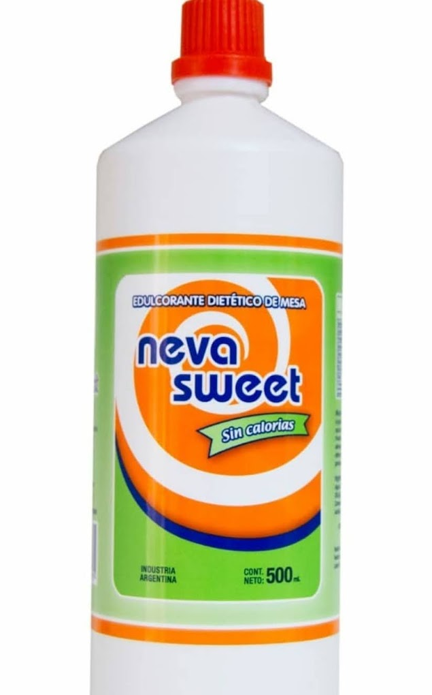

Sumérgete en la excelencia de nuestra marca ficticia, SweetDelight, y descubre nuestro azúcar impalpable premium. Diseñado meticulosamente para la perfección en la repostería, nuestro azúcar se distingue por su finura excepcional y capacidad de disolverse con suavidad. Este producto es esencial para lograr texturas suaves y sabores equilibrados en tus creaciones culinarias. Desde glaseados sedosos hasta merengues aireados, nuestro azúcar impalpable garantiza resultados irresistibles. Eleva tus experiencias culinarias con SweetDelight, donde la calidad y la pasión se encuentran en cada grano de azúcar.
Explora una alternativa más saludable con SweetLite, nuestro edulcorante artificial de última generación. Diseñado para aquellos que buscan disfrutar del dulzor sin calorías, SweetLite ofrece el mismo sabor delicioso que el azúcar tradicional, sin los remordimientos asociados. Este edulcorante es perfecto para aquellos que desean reducir su consumo de azúcar sin sacrificar el placer de lo dulce. Añade un toque de dulzura a tu vida de manera consciente y deliciosa con SweetLite, donde el bienestar se combina con el sabor.
Descubre la excelencia de nuestra azúcar refinada en CrystalPure. Este ingrediente clásico y versátil es la esencia de la dulzura pura. CrystalPure se destaca por su fina textura y sabor inconfundible, perfectos para endulzar desde tu café matutino hasta las elaboradas creaciones de repostería. La pureza de nuestra azúcar refinada garantiza resultados consistentes en todas tus recetas, brindando una dulzura refinada que eleva cada bocado. Añade un toque de tradición y calidad a tus platos con CrystalPure, donde la dulzura se encuentra con la perfección.
Explora la opción inteligente para tu estilo de vida saludable con SweetLite, nuestro azúcar light de calidad premium. SweetLite ofrece la misma dulzura deliciosa que el azúcar tradicional, pero con menos calorías. Esta elección consciente te permite disfrutar de tus bebidas y postres favoritos sin comprometer tu bienestar. La versatilidad de SweetLite hace que sea fácil integrar esta alternativa baja en calorías en tu dieta diaria. Descubre un camino más ligero hacia el placer dulce con SweetLite, donde el sabor y el bienestar se encuentran armoniosamente.